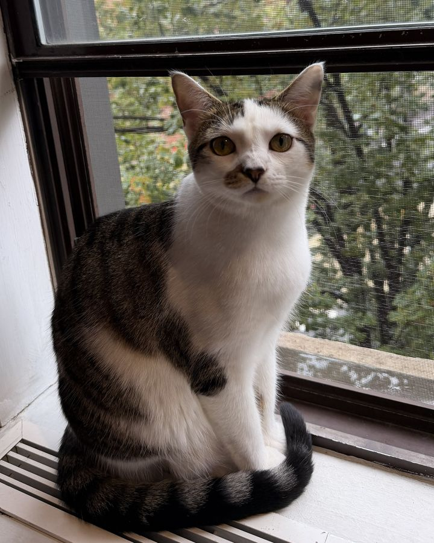
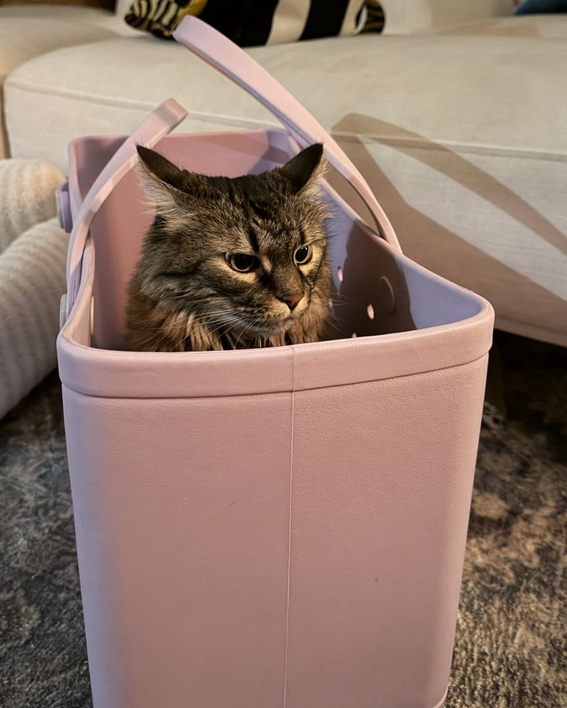

The weekend
We're getting married at the BORO Hotel in Long Island City, right across the river from Midtown. The night is built around food: generous stations instead of a plated dinner, so come hungry and graze all evening.
-
FridayOctober 1
Welcome drinks
Time and place to come. Casual and optional, a chance to say hi before the big day.
-
SaturdayOctober 2
Ceremony & celebration
BORO Hotel, 38-28 27th Street, Long Island City. Ceremony at time TBD, followed by dinner and dancing.
-
SundayOctober 3
Farewell brunch
Details to come.
The welcoming committee
Sybbie and Sasha won't be at the wedding, but they'd like you to know they approve.


Getting here
BORO is at 38-28 27th Street, Long Island City, NY 11101, one subway stop from Manhattan.
NW The closest stop is 39 Av–Dutch Kills, a few minutes' walk. 7 Queensboro Plaza is also nearby and connects to the 7.
By air
LaGuardia is closest, usually 20–30 minutes by car. JFK and Newark both work too; budget more time, especially on a Friday.
From Manhattan
A short ride on the N, W, or 7 from Midtown, or a quick cab over the Queensboro Bridge.
Driving
Parking details to come. Street parking in LIC can be tight on weekends, so leave extra time.
Where to stay
We have a block of rooms at BORO, so you can walk from your room to the party and back.
BORO Hotel room block
Mention the Jackie & Larkin wedding when booking, or use the link below. Please book by cutoff date; rooms are limited.
Book a room at BOROIf the block fills up, other Long Island City hotels are close by, and Midtown Manhattan is a short subway ride away.
Eat & explore
Food is kind of our thing, so here's where we'd send you. Long Island City is where you'll be staying; Greenpoint is our neighborhood, a short ride away.
Long Island City
- Gantry Plaza State ParkWaterfront
The best view of the Manhattan skyline, especially at sunset.
- MoMA PS1Court Square
Contemporary art in an old public school.
- Noguchi MuseumNear the river
A calm garden and sculpture museum, worth the walk.
- Dutch KillsNear the hotel
Serious cocktails, a few blocks from BORO.
- Your favorite LIC restaurant
Why you love it.
Greenpoint, our neighborhood
- Transmitter ParkWaterfront
A small pier with a big view.
- Our go-to dinner spot
What to order.
- Our coffee place
A line about it.
- Where we'd take you for a drink
A line about it.
G The G train connects Long Island City (Court Sq) and Greenpoint directly.
Questions
What should I wear?
Dress code to come. Early October in New York is usually mild, somewhere in the 60s, and cooler once the sun goes down.
Are kids welcome?
Your answer here.
Can I bring a plus-one?
Your invitation will list everyone who's invited. If you have questions, just reach out to us.
I have a dietary restriction.
Let us know when you RSVP. With this much food, we'll make sure there's plenty for you.
Who do I contact with questions?
Email or phone number.